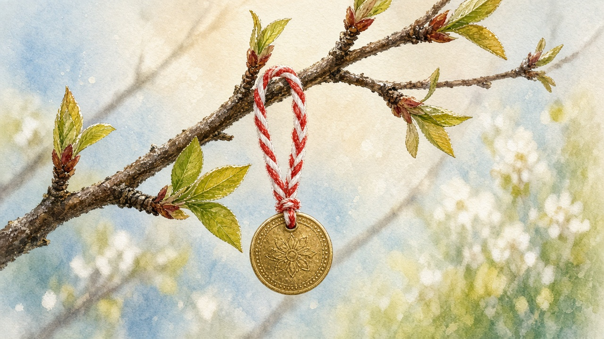

Mărțișor
March 1. A red-and-white thread on a coat, often with a small charm. Not a parade. The mark that winter is being argued with.

What people pin
The thing itself is small. Two strands twisted together — red and white — a șnur, pinned at the lapel or the collar. Often a charm hangs from it: a coin, a flower, a handmade figure someone sat with the night before. Shop versions glue a plastic snowdrop or a heart onto a card. The name covers the whole object, thread and trinket together. You wear it through early spring. When it comes off, the old habit is to hang it on a flowering tree or bush — a branch that has already opened — and leave it there. That is the end of the pin, not a ceremony with a ticket. A handmade charm, when there is one, belongs with the other small work of the house; see crafts.
Everyday, not a show
There is no procession. Towns put trays of them out in the last days of February: plastic, foil, a printed card, sold next to chewing gum. Villages and families still twist a simpler one, or give one they made. A teacher pins them on a class. A neighbor leaves one in a palm. The point is not the object. It is the turn out of winter — the same turn the stove and the woodpile have been waiting for. After months of the yard in frost, a thread on a coat is how a lot of people say March has started. The calendar that holds that hinge is on late winter on the year.
Not Dragobete
Late February holds Dragobete, a day for pairing and for the first birds. Towns now sell it as a Valentine with a Romanian name. It sits a few days before this thread and it is not the same custom. One is about who you walk with. The other is a pin you put on whether you are walking with anyone or not. Both sit on the year; only one of them is a red-and-white string. How a small gift sat in courtship, without turning this thread into a pairing day, is on romance.
A string other yards know
Red and white March strings show up across the Balkans. Bulgaria’s martenitsa is the nearest cousin: same colors, same first of March, a different word. This page does not map them. It only notes that the Romanian pin is not a private invention, and that the season — not the souvenir tray — is what the colors are for.